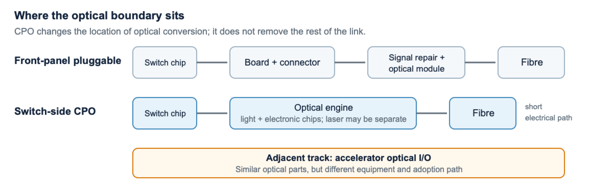
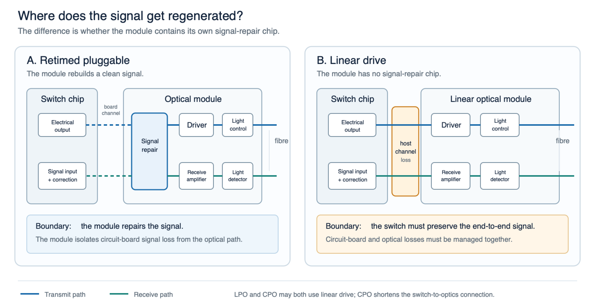
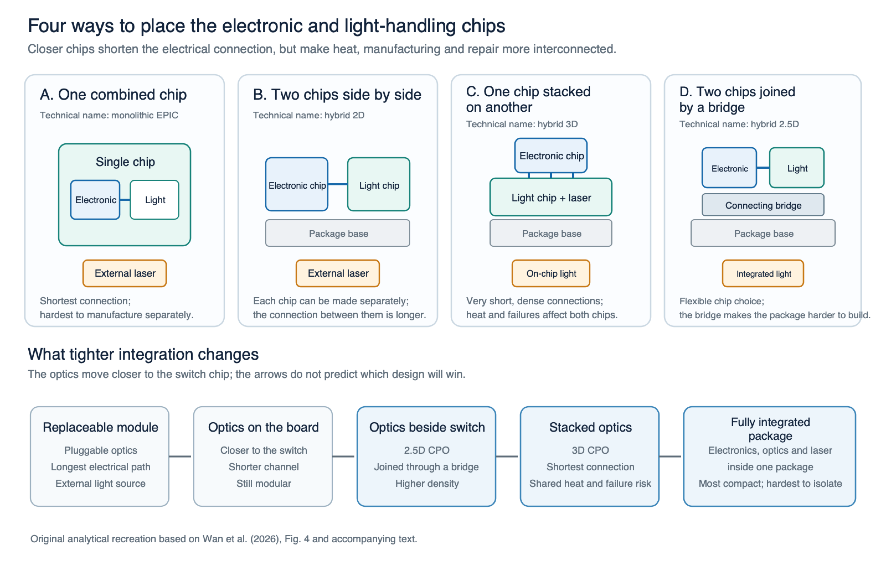
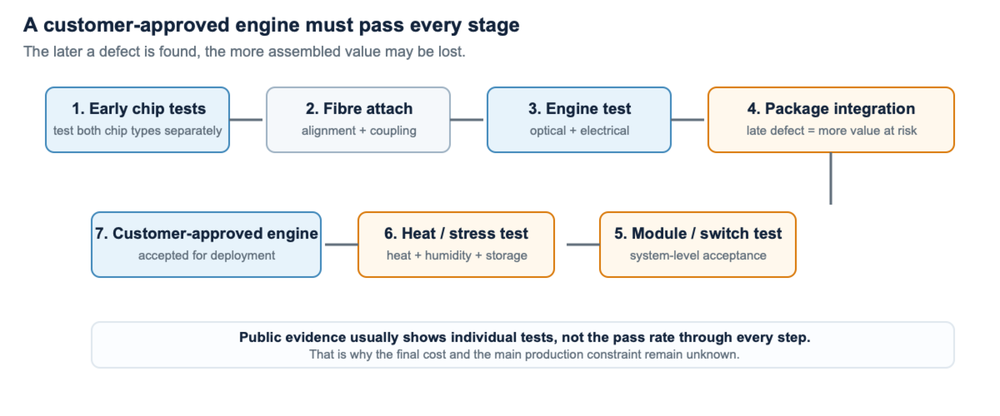
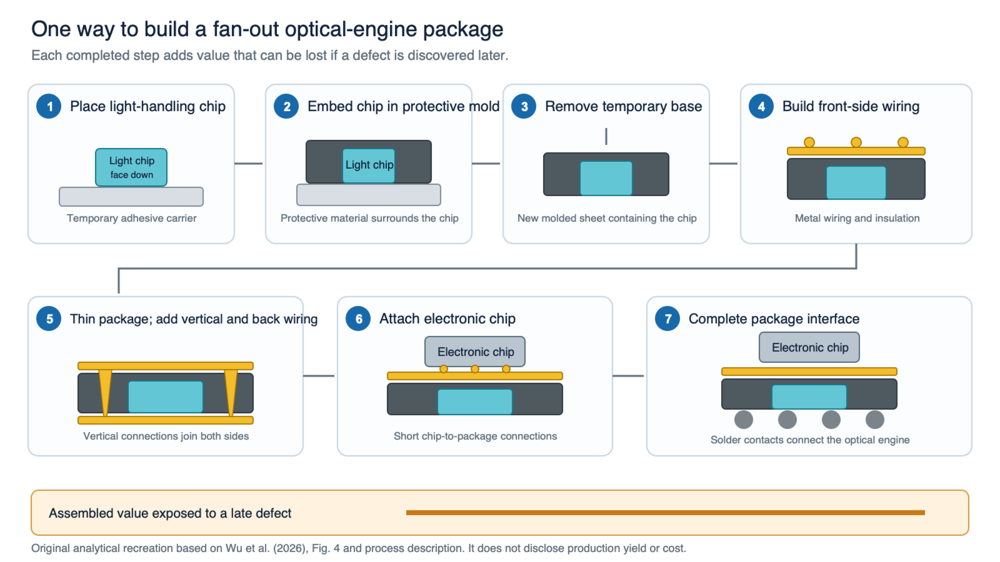
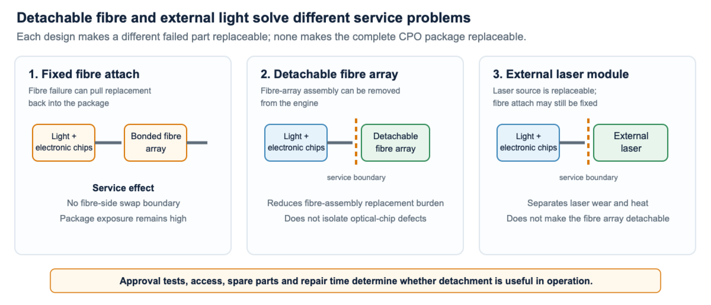
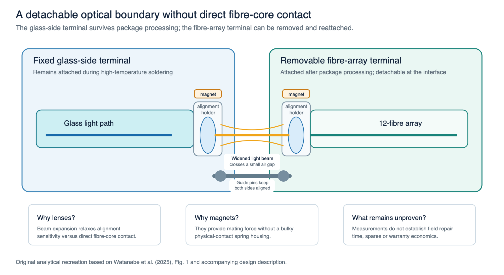
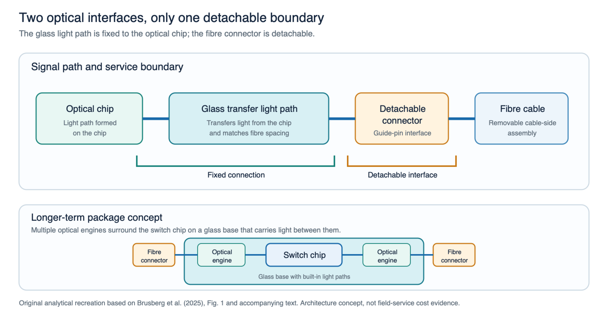
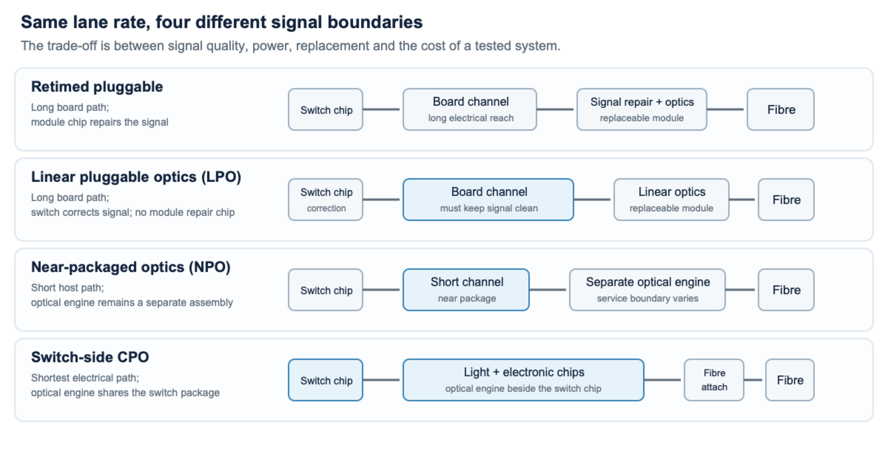

CPO digest
A plain-language guide to the problem, the technology and the companies
The short version
Artificial-intelligence (AI) data centres are pushing more data through every network switch. Today, most switches turn electrical signals into light inside small, replaceable modules at the front of the box. That design still works, but the electrical signal must travel farther across the switch before it reaches the module. At higher speeds, keeping that signal clean takes more power and becomes harder. Co-packaged optics (CPO) moves the parts that create and receive light next to the switch chip, making the difficult electrical journey much shorter.
This can reduce power and fit more network capacity into one switch. The trade-off is that the optics become part of a larger, more complicated assembly that may be harder to build, test and repair. The central question is therefore not simply “does CPO work?” It is: after failed parts, manufacturing losses, maintenance and replacement are included, is CPO better than the strongest alternative?
Background
Definitions, boundaries and orientation
Start with the six terms below. Open the technical reference only when a later section uses an unfamiliar manufacturing or signalling term. The full report’s glossary goes further.
Six terms to start
| Term | Plain-language meaning | Why it matters here |
|---|---|---|
| CPO — co-packaged optics | The light-producing and light-receiving parts sit next to the switch chip instead of in a front-panel module. | The short electrical connection can save power, but a fault may affect a larger and more expensive assembly. |
| Optical engine | The group of parts that turns electrical data into light and back again. It includes optical and electronic chips, laser light, fibre connections and packaging. | CPO becomes practical only if manufacturers can build, test and repair this whole unit at an acceptable cost. |
| LPO — linear pluggable optics | A replaceable front-panel module that removes much of the signal-repair electronics and asks the switch to send a cleaner signal. | It can cut power without giving up easy module replacement, so it is an important alternative to CPO. |
| NPO — near-packaged optics | A separate optical engine is placed close to the switch chip, but is not integrated as deeply as CPO. | It may capture some power benefit while keeping a more practical replacement point. |
| Optical I/O | Optical links used to connect computing chips inside a scale-up system. | It uses similar technology, but solves a different problem from moving Ethernet traffic through a network switch. |
| ASIC — application-specific integrated circuit | The switch’s main processing chip—the part that makes forwarding decisions. | It is the electrical starting point: CPO changes how quickly data leaves this chip as light. |
Technical terms used later
| Term | Plain-language meaning | Why it matters here |
|---|---|---|
| PIC / EIC — photonic / electronic integrated circuits | The PIC guides and changes light. The EIC supplies the electronic driving and receiving functions. | These two chips sit at the centre of the optical engine and are possible sources of technical advantage. |
| Silicon photonics | Making light-guiding circuits with silicon-chip manufacturing methods. | It can bring optical functions into established semiconductor factories and advanced chip packages. |
| Port / lane | A port is one external network connection. Each port combines several smaller data paths called lanes. | “200G/lane” means each lane carries 200 gigabits per second; faster lanes make the electrical path harder to drive. |
| 102.4T | Total switch capacity of 102.4 terabits per second, or 102.4 trillion bits each second. | It describes total traffic capacity, not the speed of one port or proof of customer adoption. |
| Scale-out / scale-up | Scale-out connects many servers or racks through a network. Scale-up tightly connects processors inside one large computing system. | Switch-side CPO mainly targets scale-out Ethernet; accelerator optical I/O mainly targets scale-up connections. |
| SerDes — serializer/deserializer | Circuitry that turns many slower data streams into a few very fast electrical lanes, then reverses the process at the other end. | Faster lanes are harder to move across a circuit board; that difficulty is the main reason CPO is being considered. |
| DSP — digital signal processor / retimer | A signal-repair chip that rebuilds a clean data signal and restores its timing. | It makes longer electrical links possible, but consumes power, creates heat and adds cost. |
| FAU / fibre attach | The fibre-array unit and the precise process used to line up many fibres with the optical engine. | A tiny alignment error can cause failure. Whether the fibre can be detached and reworked affects manufacturing cost and repair. |
| FOWLP — fan-out wafer-level packaging | A way to package several small chips by embedding them in a larger reconstructed wafer and building new connections around them. | It is one possible manufacturing route. A process diagram alone does not show how many finished units pass or what they cost. |
| Wafer / die | A wafer is the flat disc on which many chips are manufactured. A die is one individual chip cut from that wafer. | Testing while parts are still on the wafer can find failures before expensive assembly. |
| Yield | The percentage of manufactured units that pass a test. | A low pass rate—especially near the end of assembly—raises the cost of every good engine shipped. |
| Qualification | The tests used to prove that a product keeps working across heat, vibration, ageing and other expected conditions. | A laboratory prototype is not ready for customers until the complete product passes these tests. |
The rest of the digest uses these short names. To compare designs fairly, they must carry the same amount of data over the same distance, include the same major power loads and follow the same repair policy. A low-power chip is not enough if the rest of its system performs a different job (Optical Internetworking Forum 2023, 2024; China Mobile and IEEE 802.3 400G per Lane Study Group 2026; Marvell 2025).

Key takeaway from Figure 1: switch-side CPO shortens the electrical path inside a network switch. Accelerator optical I/O serves a different scale-up connection and should not be treated as a direct competitor.
1. Why the industry needs a new interconnect
The industry is not facing one isolated problem. Faster electrical links use more power, take more space and become harder to keep reliable. CPO addresses that problem by shortening the electrical link, but it moves some of the difficulty into manufacturing, testing and repair.
Evidence boundary: the figures in this chapter explain design and manufacturing trade-offs. Commercial adoption and supplier economics are assessed separately in Chapters 2 and 4.
Problem A — the electrical path is becoming expensive
At high lane rates, data leaves the switch chip as an electrical signal and travels through the chip package, circuit board and connectors before reaching the front-panel optical module. Every part of that route weakens and distorts the signal. Engineers can repair it, but doing so costs power and creates heat. CPO places the optical engine close to the switch chip, shortening the hardest part of the route (Optical Internetworking Forum 2023, 2024).

How to read Figure 2: a digital signal processor (DSP) is a signal-repair chip. In panel A, that chip rebuilds a clean signal inside the module before the optical section handles it. Panel B removes the chip, so the switch must keep the signal usable across the entire circuit-board route, including the orange section marked “host-channel loss.” Blue arrows show data travelling toward the fibre; green arrows show the return path. Both LPO and CPO can remove the module signal-repair chip. CPO then shortens the remaining distance by placing the optics much closer to the switch chip (Chou et al. 2024).
Key takeaway from Figure 2: removing the module signal-repair chip saves power only if the remaining electrical path still works reliably. CPO’s additional advantage over LPO is that it also shortens that path.
What would solve it: shorten the electrical path, or improve the existing path with signal-repair chips (retimers), LPO, electronic correction for signal distortion (equalisation), or powered cables that help restore the electrical signal.
Why CPO is not automatically the winner: a shorter path is valuable only if its manufacturing and service burden is lower than the electrical burden it removes.
A lane is one high-speed electrical data path inside a connection. At 200 gigabits per second per lane (200G/lane), Broadcom and NVIDIA have named products built around a short electrical path. At 400G/lane, even small losses inside the chip package matter more. Results from one laboratory setup therefore cannot prove that the same design wins in every switch (Broadcom 2025c; NVIDIA 2026a; Zhou et al. 2026).
So what? Higher lane rates increase the value of a shorter electrical path, but they also make package signal loss, heat management and manufacturing variation more consequential.
A useful mental model is a voice becoming harder to hear as it passes through several walls. Every connector and section of circuit board makes the electrical signal less clear. Equalisation and retiming can “speak louder” or rebuild the message, but they use power and create heat. CPO removes part of that difficult route by converting the signal to light earlier. It wins only if the electrical benefit is larger than the added cost of building and servicing the integrated package.
Problem B — power and density are becoming system constraints
Every switch has a limited supply of electricity and cooling. As the number and speed of its connections rise, optical modules, signal-repair chips and cooling equipment consume power and space that could otherwise support more computing. NVIDIA and Broadcom present CPO as a way to increase network capacity, but neither has published an independently measured comparison in which CPO and its alternatives perform exactly the same job (NVIDIA 2025; Broadcom 2025b).
What would solve it: demonstrate lower delivered power at the same lane rate, reach, throughput and cooling boundary—not just a lower component number.
The full report uses a simple example to show the possible scale. A 102.4-terabit switch has 64 ports carrying 1.6 terabits per second each. If each CPO interface uses 7.2 watts, the interfaces together use 460.8 watts. If each fully retimed interface uses 24 watts, they use 1,536 watts. But an efficient LPO interface at 8 watts would use only about 10% more than the assumed CPO case. These are illustrative assumptions, not measurements of complete switches. They show that CPO looks much better against a power-hungry retimed design than against an efficient LPO or NPO alternative (NVIDIA 2025; Marvell 2025).
So what? CPO’s apparent advantage depends on what it replaces. It is substantial against a heavily retimed link, but modest against an efficient LPO or NPO design.
The comparison must count the same parts on both sides. A component-level energy number may exclude the laser, switch electronics, power conversion and cooling. A whole-switch number may include loads that every design needs. The useful test is total operating power while moving the same amount of data over the same distance with the same cooling and error correction. Until such a comparison is public, the calculation shows how the answer changes under different assumptions; it does not prove that every CPO switch saves 70%.
Problem C — dense optical assembly is difficult to manufacture
An optical engine combines several fragile and expensive parts: light-handling chips, electronic drivers and receivers, a laser, precisely aligned fibres, cooling structures and packaging. A bad chip found before assembly is one lost chip. The same defect found after all parts are attached may waste the whole engine. Public sources map the manufacturing and test steps, but not the production pass rate at each one (ASE 2025; Teradyne 2026; Advantest 2026; ficonTEC 2025; Aehr Test Systems 2026).
What would solve it: test earlier, use components that have already passed their own tests, automate alignment and make failed parts replaceable without destroying the rest of the engine.

How to read Figure 3: the four cards show the same two jobs—processing electrical data and handling light—arranged in different ways. Moving the chips closer shortens the electrical connection and can fit more bandwidth into less space. The trade-off is that heat, manufacturing problems or a failed part can affect more of the package. The lower row summarises that trade-off from an easily replaced module to a tightly integrated package (Wan et al. 2026).
Key takeaway from Figure 3: tighter integration can improve speed, power and density, but it concentrates manufacturing, heat and repair risk. The most integrated design is not automatically the most economical one.
The practical flow is: test chips while they are still on the manufacturing wafer → screen each individual chip → align and attach the fibres → test the optical engine → add it to the package → test the module or switch → run heat and lifetime tests. A defect found early may waste one chip. Found late, it can waste the chip, engine, package, labour and test time already invested (ASE 2025; Teradyne 2026; Advantest 2026; ficonTEC 2025; Aehr Test Systems 2026).

Figure 4 follows the product from its earliest chip tests to final approval. Heat and stress testing—often called “burn-in”—operates the engine under harsh conditions to expose early failures before shipment. Each step adds more materials and work.
Key takeaway from Figure 4: failures become more expensive later in assembly. Early testing and the ability to repair failed units can matter as much as the performance of the optical chip itself.

How to read Figure 5: steps 1–3 place the light-handling chip face down, surround it with protective material and release the newly formed wafer. Steps 4–5 build metal wiring on both sides and through the package. Steps 6–7 attach the electronic chip and add the package’s external contacts. The important point is the order: every completed step adds value that may be lost if a later test fails (Wu et al. 2026).
Key takeaway from Figure 5: what matters is the cost of each engine that passes every test, not the speed of one machine or assembly step. Until companies disclose pass rates and repair results, outsiders cannot tell which manufacturing step is the largest constraint.
The manufacturing question is not simply “can a machine line up the fibres once?” The alignment must survive heat, vibration and the high-temperature steps used to join components. Tests must find hidden defects before customers do, and failed units should be repairable where possible. Testing chips earlier can prevent expensive late failures, but it also adds equipment and time. The best process is the one that produces the lowest cost per fully tested engine—not merely the fastest assembly step.
Problem D — replacing a failed part may be harder
A front-panel optical module can normally be pulled out and replaced while the rest of the switch stays in place. A deeply integrated CPO engine may not be removable on its own. A separate laser or detachable fibre connector can isolate one possible failure, but it does not automatically make the light-handling chip or the whole package repairable (Optical Internetworking Forum 2025; Psaila et al. 2023).

Figure 6 shows that a removable fibre-array unit (FAU)—the aligned block holding several fibres—lets a technician replace the fibre connection, while a separate external laser lets the light source be replaced.
Key takeaway from Figure 6: “detachable” does not mean that the entire optical engine is replaceable. The repair benefit depends on which specific part can be removed.
Engineering examples: two detachable connector routes

How to read Figure 7: the part on the left stays attached to the glass base throughout manufacturing. The fibre unit on the right is added later and can be removed. Lenses widen and refocus the light across a small air gap; guide pins keep the two sides lined up; magnets hold them together. Only the fibre unit is detachable—not the optical chip or the whole package. Laboratory connector measurements do not tell us how long a field repair takes or what it costs (Watanabe et al. 2025).
Key takeaway from Figure 7: the design may make fibre replacement easier, but it does not make the optical chip replaceable. Its economic value depends on preserving alignment while reducing repair time and scrap.

How to read Figure 8: light crosses two connection points. First, the optical chip transfers light into a glass path that remains permanently attached. Second, a guide-pin connector joins that glass path to the removable external fibre. The lower drawing shows a longer-term idea in which several optical engines surround one switch chip on a glass base. In this design, only the second connection—the fibre connector—is presented as replaceable (Brusberg et al. 2025).
Key takeaway from Figure 8: the added glass path creates a useful replacement boundary, but also introduces another optical connection that must remain low-loss, aligned and manufacturable.
What would solve it: define which part can be replaced in the field, how long the repair takes, what spares are needed and who carries the warranty cost.
This is a major system-design choice, not a minor connector detail. A detachable laser or fibre connection may make one type of failure easy to fix, while a failed optical chip or bonded engine may still require replacing a much larger assembly. The practical questions are: how long does repair take, what spare parts must be stocked, how often do tests miss defects and who pays for failures under warranty (Optical Internetworking Forum 2025; Psaila et al. 2023).
The replacement design also changes operating cost. A replaceable laser may need only a small spare part. A non-replaceable engine may require work on an entire switch tray or chassis. Customers will weigh lower power against repair visits, spare inventory, downtime and warranty cost. Public CPO disclosures rarely report these figures, so repairability remains one of the main adoption questions.
Problem E — technical success does not identify the profit winner
CPO moves parts and spending out of the traditional front-panel module and into the optical engine, laser, fibre connection, package and testing process. That changes who does the work, but does not tell us who will earn the most profit. Public disclosures identify companies that may control important steps, but rarely reveal their share of each product, selling price, manufacturing pass rate, repair cost or warranty responsibility (NVIDIA and Coherent 2026; Lumentum 2026c; TSMC 2026b; ASE 2025).
What would solve it: connect a named product to a named supplier, show how many customer-accepted units use that supplier’s parts and disclose the profit after manufacturing costs.
The economic chain is: a customer needs the design → a complete engine passes customer approval tests → a supplier is confirmed in that engine → manufacturing and repair costs are known → the supplier earns profit after direct manufacturing costs. A company can provide an essential part and still earn little if customers can buy it from several suppliers, its factories are expensive or prices fall quickly. A partnership, demonstration or factory expansion therefore shows opportunity—not proven profit.
Profit can also move from one part of the supply chain to another without increasing overall. CPO may reduce spending on signal-processing chips inside pluggable modules while increasing spending on optical chips, lasers, fibre connections, advanced packaging and test. If several suppliers can provide interchangeable parts, those parts may be technically important but offer weak pricing power. Lasting profit requires something difficult to copy or replace: scarce capability, a long customer-approval process, high switching costs or control of the complete system.
2. What stage is the industry at?
The technology has moved beyond isolated laboratory experiments. However, the public record still does not show repeat customer deployment with known costs and supplier profits.
Stage 1 — component and laboratory evidence
Academic papers and vendor demonstrations show that high-speed optical chips, engines, external lasers, packaging and test methods can work under stated laboratory conditions. They establish workable building blocks, not customer demand or profitable production (Amiralizadeh et al. 2025; Wu et al. 2026; Tran et al. 2026).
In plain language, a successful prototype proves that light can enter, leave or be changed by the device as intended. Factory consistency, final-test pass rates and economical repair are later tests.
This evidence identifies the engineering priorities: laser light, chip integration, fibre alignment, heat removal and early testing. Because each paper usually studies one device or prototype, it cannot rank suppliers.
Stage 2 — defined products and platforms
Broadcom calls its latest switch-chip family Tomahawk 6 and its 102.4-terabit CPO version Davisson. NVIDIA calls its CPO switch system Spectrum-X Ethernet Photonics; Ethernet is the common wired-network standard used to connect computers and network equipment. Both products use 200G electrical lanes (Broadcom 2025c; NVIDIA 2026b). This is stronger than a laboratory demonstration because each company has described a product customers could potentially buy.
A defined product changes the research question. We no longer ask only “can CPO be built?” We ask: which exact version is being sold, who bought it, how many were accepted and what can be replaced if it fails? An announcement about a whole family of switches does not answer those questions for the CPO version.
This is why the digest names the products but does not turn them into market-share forecasts. A specified switch proves that a vendor has committed engineering and product resources. It may not reveal whether customers are receiving the CPO version, a conventional pluggable version or both under the same product-family name.
So what? A named product route moves CPO beyond laboratory feasibility, but it still cannot support a volume or earnings forecast until the exact configuration and customer uptake are disclosed.Stage 3 — production signals, but not complete commercial proof
NVIDIA says Spectrum-X Ethernet Photonics is “in production,” while Broadcom says the broader Tomahawk 6 family is shipping in production volume. Public evidence still does not connect an exact CPO model to a named customer, the number accepted, repeat orders, manufacturing pass rates or supplier profit. The report therefore treats these announcements as early production evidence, not complete commercial proof (NVIDIA 2026b; Broadcom 2026a).
| Vendor | Exact disclosed CPO route | What the public record establishes | What remains unproven |
|---|---|---|---|
| NVIDIA | SN6800 / SN6810, two Spectrum-X Ethernet Photonics switch models |
Named CPO models using 200G electrical lanes; NVIDIA describes the platform as in production (NVIDIA 2026a, 2026b). | A customer confirming the exact model, accepted units and repeat orders; manufacturing pass rate, repair cost and CPO profit. |
| Broadcom | BCM78919, the Tomahawk 6 Davisson CPO switch chip |
A defined 102.4T CPO switch chip using 200G lanes; Broadcom says the broader Tomahawk 6 family is shipping in production volume (Broadcom 2025a, 2025c, 2026a). | Proof that repeat customer shipments include this exact CPO version; manufacturing pass rate, repair cost and supplier profit. |
These statements move the industry beyond component demonstrations, but “production” may cover evaluation systems, a wider product family or versions using ordinary pluggable optics. NVIDIA could improve its complete platform while another supplier earns the optical-engine profit; Broadcom could ship many Tomahawk 6 switches without disclosing how many use CPO. Public evidence therefore shows possible beneficiaries, not market share or profit leadership.
What would count as commercial proof?
Strong commercial proof would connect six facts: an exact CPO model, a named customer, the number of accepted units or ports, repeat orders, the supplier responsible for each major part and at least one measure of manufacturing pass rate, repair cost or profit. Until then, “production” is encouraging, but does not prove market leadership.
The evidence builds one step at a time. A customer name without an exact CPO model is ambiguous. A model without accepted units may never have moved beyond evaluation. One order may still be a pilot. Repeat orders without manufacturing and repair data do not prove profitable scale. The full report applies this same test throughout.
The result can be classified three ways. Pass: a customer confirms repeat paid deployment, the suppliers are identifiable and the economics are known. Partial pass: a product is shipping, but unit numbers, repair costs or supplier profits remain unknown. Fail for investment purposes: “production” turns out to mean a demonstration, a small evaluation, a non-CPO version or a design customers later abandon. A partial pass can show that adoption is beginning without proving who will profit.
The commercial-evidence gate in one view
The ladder separates “engineers made it work” from “customers repeatedly bought it and suppliers made money.” Each later step depends on the earlier ones.
Current public position: NVIDIA and Broadcom have identifiable product routes. The missing link is public proof that customers repeatedly bought the exact CPO versions and that those systems can be manufactured and serviced economically.
Investment decision rule. CPO becomes a strong investment theme only when public evidence connects a named product to repeat customer use, an acceptable manufacturing pass rate, a practical repair plan and identifiable supplier profit. Until then, the technology is credible and strategically important, but the financial winner remains unproven.
3. Architecture choices
These designs are different answers to the same trade-off: how close should the optics sit to the switch chip? Moving them closer can save power, but usually makes manufacturing and repair harder. The best choice depends on speed, distance, power, repair needs and how much integration risk the customer will accept.

Figure 9 shows where each design turns the electrical signal into light. LPO leaves the optics at the front of the switch and relies on the long electrical route to remain clean enough. NPO moves a separate optical engine closer to the switch chip. CPO moves it into the same package system as the switch chip. The figure also shows where signal correction happens and whether the fibres attach at the front panel or near the switch chip.
Key takeaway from Figure 9: moving the optics closer makes the electrical connection easier to drive, but makes the complete package harder to build and repair. The comparison explains the design boundary; the sections below assess where each route can win.
Retimed pluggables — the mature baseline
What they do: keep the optical module replaceable and put more signal-processing electronics inside it.
Why they can win: technicians can replace one failed module; the supply chain and operating procedures are mature.
Where they struggle: at very high speeds, each module can use considerable power, the long electrical route becomes difficult and the front panel runs out of space and cooling.
Best fit: systems where simple replacement matters more than achieving the highest possible density or lowest possible power (Optical Internetworking Forum 2023, 2024; Chou et al. 2024).
Retimed modules are the practical baseline because customers already know how to install, monitor and replace them. They do not suddenly stop working at higher speeds. The problem is that the signal-repair chip, long electrical route and front-panel cooling may become too costly. If those costs remain manageable, a replaceable module can beat a more efficient but harder-to-repair CPO system.
A fair comparison must include replacement cost. A retimed module may be expensive and power-hungry, but a technician can swap it without touching the switch chip or neighbouring connections. That simplicity has real financial value, even though laboratory power charts often ignore it. CPO must save enough power, space or total cost to compensate.
LPO — the lower-power pluggable alternative
What it does: removes most or all of the signal-repair chip inside the module. The switch and circuit board must then keep the signal clean enough by themselves.
Why it can win: lower module power while keeping a replaceable module.
Where it struggles: it has less tolerance for circuit-board loss and variation, and modules from different vendors may be harder to mix reliably.
Best fit: systems where the electrical channel is good enough that deep package integration is unnecessary (Chou et al. 2024; Optical Internetworking Forum 2024).
LPO asks whether better switch and circuit-board design can avoid deep optical integration. It keeps the replaceable module and removes power-hungry electronics from it, but the switch maker must do more work to keep the end-to-end signal reliable. Designs must still be compared at the same speed, distance, error correction and cooling requirement.
LPO is strongest when the switch and circuit board can deliver a clean signal without a retimer. It is weakest when connectors, manufacturing variation or longer distance damage the signal too much. A low module-power figure is not enough; the design must also work reliably across different switches and modules in real deployments (Chou et al. 2024; Optical Internetworking Forum 2024).
NPO — the intermediate route
What it does: places optics nearer to the switch chip than a front-panel module, without necessarily integrating every optical function into the same package.
Why it can win: it shortens the difficult electrical path while keeping more of the optics as a separate, potentially replaceable assembly.
Where it struggles: it can introduce its own package, connector, heat-management and cable-management complexity.
Best fit: deployments that need a shorter electrical path but still value an intermediate replacement boundary (China Mobile and IEEE 802.3 400G per Lane Study Group 2026; Optical Internetworking Forum 2026).
NPO is not merely a temporary step on the way to CPO. It could remain a long-term compromise if it saves enough power while keeping an engine, tray or connector replaceable. The risk is that it creates new packaging and cable complexity without gaining the full electrical benefit of CPO (China Mobile and IEEE 802.3 400G per Lane Study Group 2026; Optical Internetworking Forum 2026).
NPO can also change which company has influence. A detachable optical engine may give the engine supplier a larger role, while the switch maker still controls the package and repair interface. Customers may like the extra supplier choice, but only if the connection is standard enough to avoid a unique maintenance process for every vendor.
Switch-side CPO — the deepest integration route
What it does: places the optical engine next to the switch chip, shortening the highest-speed electrical path.
Why it can win: it gives the shortest electrical path, can fit more connections into one switch and may use less interface power.
Where it struggles: precise fibre attachment, heat, final testing, repair, field replacement and identifying which supplier captures the value.
Best fit: very high-bandwidth Ethernet networks where ordinary electrical links use enough power or lose enough signal to justify the harder CPO package.
The clearest public product activity is in Ethernet switches using 200G lanes, where NVIDIA and Broadcom have both specified CPO routes. At 400G/lane, the reason for shortening the electrical path becomes stronger, but commercial evidence is weaker. Small differences in package loss, heat and required distance can still determine whether CPO, NPO or LPO is the better complete system (Broadcom 2025b, 2026b; Zhou et al. 2026).
Deep integration concentrates both the benefit and the risk. It shortens the hardest electrical link and frees front-panel space. But fibre alignment, heat expansion, package stress and switch uptime become connected problems. Customers will accept that trade-off only when less integrated designs cannot deliver the required speed and power at an acceptable repair cost.
Accelerator optical I/O — adjacent, not a direct CPO competitor
Optical I/O uses light to connect computing accelerators—such as AI chips—inside a tightly connected scale-up system. It shares optical chips, lasers and packaging techniques with switch-side CPO, but it serves a different part of the data centre and follows a different buying cycle. It should therefore have its own adoption forecast.
Why it matters here: Marvell and some component suppliers may gain more from scale-up optical I/O than from Ethernet switch CPO. It is a separate possible source of supplier revenue and profit, not a replacement for the switch-CPO comparison (Marvell 2025; Marvell Technology 2026).
Keeping the two markets separate prevents double counting. Switch-side CPO moves Ethernet traffic through network switches. Optical I/O connects accelerators inside a computing system. They may buy similar optical parts, but the products, customers, replacement rules and adoption schedules differ.
The same supplier can still benefit from both markets. An optical-chip or laser company may sell similar parts into each, while a platform company may be strong in one and weak in the other. The analysis should forecast the markets separately, then add only the supplier revenue that can be attributed to each product.
4. Which companies matter?
The companies would benefit for different reasons. A switch company may use CPO to protect its platform. A component company may sell more optical engines or lasers. A manufacturer may earn more packaging and test work. These are separate investment cases, even if the same technology drives them. Across all six, the public record is strongest on product direction and weakest on accepted volume, manufacturing cost and CPO-specific profit.
| Company | Route type | Main exposure | Current view | Confidence |
|---|---|---|---|---|
| NVIDIA | Complete platform | Switch chip, networking system and software | Likely strategic beneficiary | Medium |
| Broadcom | Direct switch CPO | Switch chips sold to equipment makers | Likely core chip supplier | Medium |
| Coherent | Optical components | Optical chips, lasers and engines | Potential component beneficiary | Medium |
| Lumentum | External laser | Replaceable laser light source | Promising; watch for volume | Medium |
| TSMC | Manufacturing infrastructure | Chip manufacturing and advanced packaging | Possible manufacturing beneficiary | Medium |
| Marvell | Adjacent optical I/O | Optical links between AI chips | Longer-term opportunity | Low–medium |
The table gives the short answer. The sections below explain what each company controls, how it could make money and what evidence would weaken the view.
NVIDIA — controls the complete networking system
What it controls. NVIDIA sells the switch chip, network adapters, complete switch systems and the software used to operate the network. Its CPO products sit inside Spectrum-X Ethernet Photonics, so the company can design the switch, optics and software around one another rather than selling a single component. The disclosed SN6800 and SN6810 models use 200G electrical lanes and move the optical engines close to the switch chip (NVIDIA 2026a, 2026b).
How it could benefit. NVIDIA does not need to earn most of the profit on the optical engine itself. CPO could still make its complete AI-networking platform more valuable by allowing greater network capacity in a rack, reducing power used by data movement or making the network easier to optimise with NVIDIA’s computing systems. That could support system pricing, increase the amount of NVIDIA networking equipment attached to its accelerators and make it harder for customers to replace one part of the platform independently.
What the evidence shows. NVIDIA describes Spectrum-X Ethernet Photonics as being in production. It also names large cloud companies as adopters of the wider Spectrum-X platform. The public record does not connect those customers to accepted quantities of the exact SN6800 or SN6810 CPO models, distinguish first evaluations from repeat orders, or identify the supplier and profit split for the optical engines. The evidence therefore supports a real product route, but not a CPO sales-volume estimate.
Broadcom — supplies CPO switch chips to equipment makers
What it controls. Broadcom is a leading supplier of merchant switch chips—chips that many different equipment makers can build into their own switches. BCM78919 is Broadcom’s specific 102.4-terabit CPO switch chip, while Davisson is the CPO design within the wider Tomahawk 6 family. It uses 200G electrical lanes and defines how the switch chip connects to the surrounding optical engines (Broadcom 2025a, 2025b, 2026b).
How it could benefit. Broadcom can benefit if CPO protects its position in the highest-capacity switches or adds valuable chip and integration content. Because equipment makers design around Broadcom’s switch chip, Broadcom can influence electrical interfaces, optical-engine requirements and the list of suppliers that customers must approve. This gives it an important coordinating role even when another company makes the laser, optical engine or package.
What the evidence shows. Broadcom has published a defined product, several generations of CPO development and a 102.4-terabit route. It also says the broader Tomahawk 6 family is shipping in production volume (Broadcom 2026a). That statement covers several connection choices, so it does not reveal how many shipments use the BCM78919 CPO version. Customer deployments, repeat CPO orders, manufacturing pass rates, field-repair experience and Broadcom’s additional profit remain undisclosed.
Coherent — can supply several optical-engine parts
What it supplies. Coherent covers more of the optical-engine stack than a single-component supplier. Its capabilities include silicon-photonics chips, indium-phosphide devices used to generate or control light, external lasers, fibre connections and optical assembly. This breadth matters because the industry has not settled on one engine, laser or packaging design (Coherent 2026a, 2026b).
How it could benefit. Coherent has several possible routes into a successful CPO system. It could supply a complete optical engine, a critical light-handling chip, the laser source or specialised assembly. It may also learn across these layers—for example, designing a chip around the realities of fibre attachment and volume testing. If customers approve Coherent for several difficult-to-replace parts, this could create more durable revenue than supplying a standard component available from many vendors.
What the evidence shows. Coherent has demonstrated multiple CPO-related technologies and has a strategic relationship with NVIDIA. These disclosures establish technical capability and a plausible route into production. They do not identify the exact parts used in a named customer system, Coherent’s share of each engine, the number of qualified engines shipped or the profit after manufacturing losses and warranty costs. Technology breadth is therefore useful optionality, not proof of commercial leadership.
Investor view: potential optical-component beneficiary, with medium confidence. Stronger if: a named CPO product identifies Coherent’s content, shows repeat production and demonstrates that the company holds a difficult-to-replace position. Weaker if: customers approve several interchangeable suppliers, Coherent remains concentrated in demonstrations, or costly manufacturing prevents its optical breadth from producing attractive profit.Lumentum — supplies external lasers
What it supplies. Lumentum’s clearest CPO role is the external laser: a replaceable unit that produces light outside the main switch package and sends it to the optical engines through fibre. Keeping the laser separate can move a heat-generating and failure-prone component away from the switch chip. It may also allow a failed laser to be replaced without discarding the optical engine.
How it could benefit. A CPO switch may need several powerful, reliable laser channels operating continuously. Lumentum could benefit if customers treat this light source as a specialised, high-value part and approve only a small number of suppliers. The best economic position would combine two properties: the laser is difficult for a competing supplier to replace in the approved design, but straightforward for a technician to replace when it fails in the field.
What the evidence shows. Lumentum has demonstrated high-power and multi-wavelength laser technology intended for CPO, published component-level reliability work and announced an NVIDIA partnership (Lumentum 2026b, 2026c, 2026a). These are meaningful product and supplier signals. They do not disclose how many finished CPO systems use Lumentum lasers, how much laser content sits in each system, the realised price or the resulting profit.
Investor view: promising external-laser exposure, but watch for volume; medium confidence. Stronger if: a named CPO product produces repeat laser shipments, identifiable content and attractive profit. Weaker if: several interchangeable suppliers win approval, customers reduce the number or value of lasers per system, or strong device reliability fails to translate into reliable and economical finished CPO systems.TSMC — manufactures and packages the chips
What it controls. TSMC is a chip manufacturer and advanced-packaging provider rather than a seller of standard optical engines. It can make light-handling chips with silicon processes and combine them closely with electronic chips. COUPE—Compact Universal Photonic Engine—is TSMC’s method for joining the electronic and light-handling chips into one optical engine. This manufacturing step can determine whether a promising design can be produced repeatedly at scale.
How it could benefit. TSMC could earn manufacturing and packaging revenue from several CPO designers without choosing the eventual system winner. Its position becomes more valuable if customers need a process that combines advanced electronic chips, optical chips and dense connections with consistently high pass rates—and if few other manufacturers can provide it. TSMC may therefore act as infrastructure for the industry rather than as the branded CPO product leader.
What the evidence shows. TSMC says a CPO version of COUPE is entering production, which is stronger than a laboratory-only process announcement (TSMC 2024, 2026a, 2026b). It has not identified the customers, the number of units that pass customer requirements, the available factory capacity, the price of the service or its profit from CPO. Because TSMC is very large, even a technically essential process may remain too small to affect company-wide results.
Investor view: possible manufacturing beneficiary, with medium confidence. Stronger if: customers disclose volume production, COUPE capacity becomes scarce or TSMC earns stronger pricing for the combined photonics-and-packaging process. Weaker if: other manufacturers reproduce the process, customers keep optical assembly elsewhere, or CPO remains a small specialised workload within TSMC’s much larger business.Marvell — optical links between AI chips
What it supplies. Marvell calls its product family for optical links between accelerator chips Photonic Fabric, strengthened by its acquisition of Celestial AI. This is an accelerator optical-I/O opportunity: it uses light to connect AI chips inside a tightly connected scale-up computing system. It does not perform the same job as switch-side CPO, which carries Ethernet traffic through network switches (Marvell 2025; Marvell Technology 2026).
How it could benefit. Electrical connections between accelerators become harder as computing systems grow and chips need to exchange more data. If optical I/O becomes necessary at this boundary, Marvell could sell light engines, connectivity silicon and a broader interconnect platform. The potential market could be important, but it follows accelerator design cycles, software requirements and customer decisions that differ from the Ethernet-switch market.
What the evidence shows. The Celestial AI acquisition and Marvell’s product materials establish a serious technology route and corporate commitment. They do not yet establish a repeatable production product with a named customer, accepted volume, attributable revenue or profit. Evidence that NVIDIA or Broadcom is shipping a switch-side CPO product cannot fill this gap because it validates a different application.
Investor view: longer-term optical-I/O opportunity, with low-to-medium confidence. Stronger if: a named Photonic Fabric product enters customer production and Marvell reports identifiable revenue, content or profit. Weaker if: it remains a roadmap or demonstration, competing interconnects satisfy accelerator requirements, or the acquired technology cannot produce commercial scale within Marvell’s wider connectivity business.
Bottom line
The clearest exposure ranking is:
- Broadcom — most direct merchant CPO exposure. It sells the switch chip around which equipment makers build a CPO system.
- NVIDIA — strongest complete-platform position. It can use CPO to improve an integrated computing, networking and software platform.
- Coherent — broadest component optionality. It can participate through optical chips, engines, lasers, fibre connections and assembly.
- Lumentum — most focused external-laser exposure. Its case depends on external light remaining specialised and valuable.
- TSMC — manufacturing infrastructure. It can benefit if advanced photonics integration becomes scarce, repeatable production capability.
- Marvell — adjacent optical-I/O optionality. Its main route connects accelerator chips rather than competing directly in switch-side CPO.
This ranks the directness and clarity of CPO-related exposure, not expected stock returns. Broadcom and NVIDIA control the clearest system routes; Coherent and Lumentum supply possible value-bearing components; TSMC provides manufacturing infrastructure; Marvell belongs to a separate optical-I/O adoption track. None has publicly established CPO-specific volume and profit leadership.